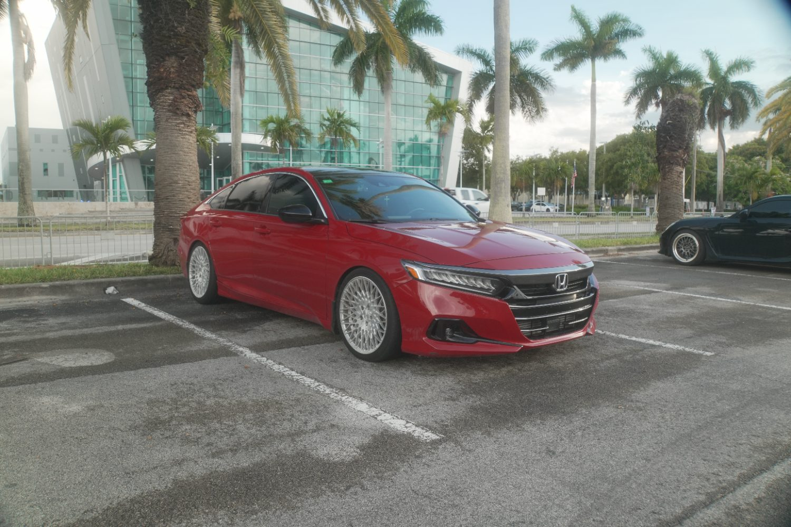
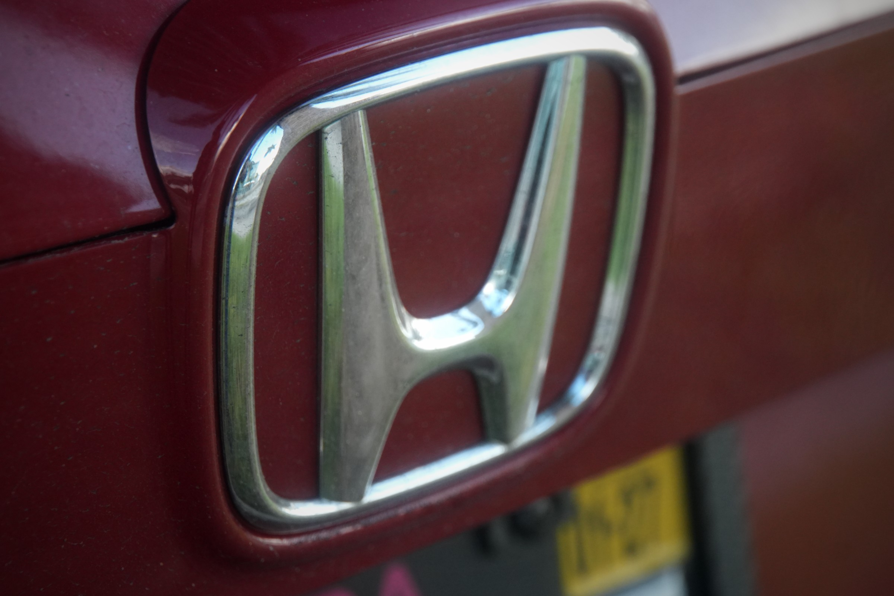
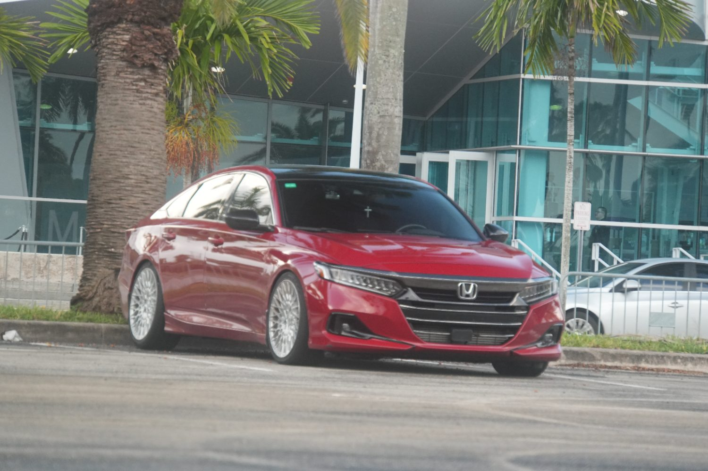
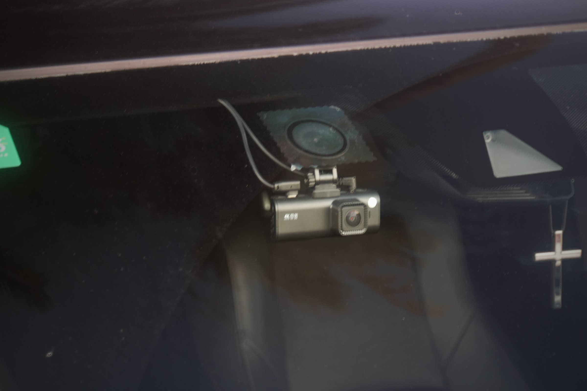
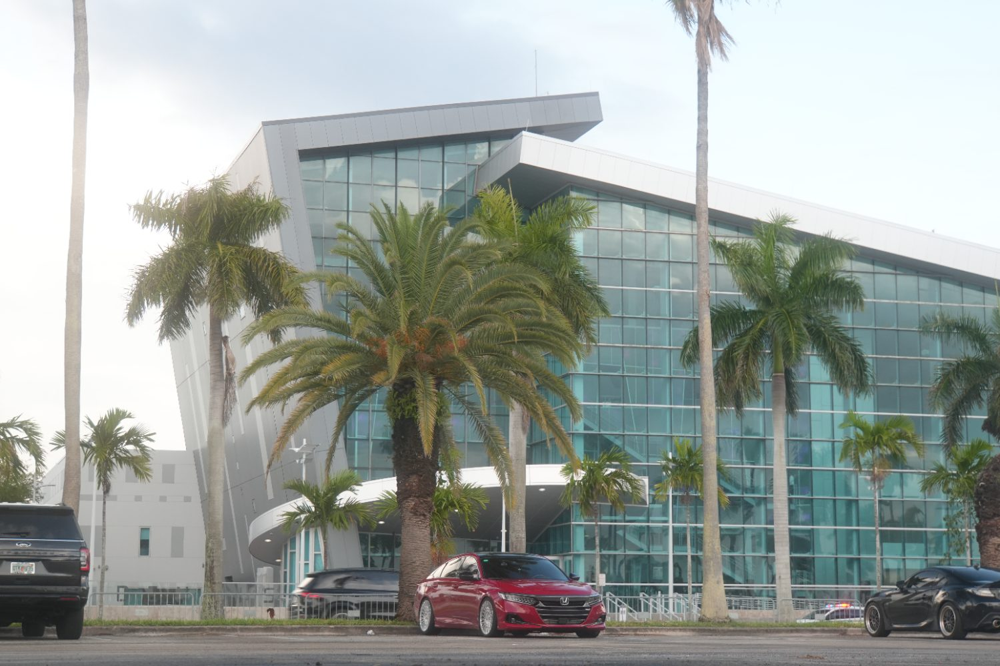

Each example below is a live loop running on your own frames — the move you'd build in DaVinci, with the exact settings underneath. The goal: stills that read as film, not slides, and a transition out of the intro that uses the rack-focus language you already established.
A slow, eased push keeps the photo alive next to your moving footage. Match the direction to the shot before it so the cut feels continuous.

Select the still → Inspector ▸ Dynamic Zoom (toggle on). Drag the green start box wide and the red end box tight for a push-in. Then ease it so it doesn't feel mechanical.
This is the best match for your intro: the opener is all rack-focus, so transitioning on a blur feels intentional rather than generic. Outgoing shot blurs out, incoming snaps into focus.

Add Gaussian Blur to the tail of the outgoing clip and the head of the incoming one, keyframed in opposite directions — or drop the Blur Dissolve transition between them for the same effect in one move.
Your intro already ends on a fade to black (11–12s). Don't fight it — let the first still rise out of that black. Cleanest, most cinematic way in, and it pairs with a quiet audio swell.

Use a Cross Dissolve from the black, or the Dip to Color transition set to black. Stack a slow Dynamic Zoom on the still so it drifts in as it appears.
After the wide reveal, cut a quick run of detail stills — each held under a second with a tiny push, hard-cut on the beat. This is where the retouched close-ups (badge, the cross on the mirror) earn their place.

Trim each still to the same short length, give each a small Dynamic Zoom, and snap the cut points to your music markers so the rhythm is locked to the track.
The #1 fix for the "slideshow" look: stills are too clean next to compressed video. Apply your teal-and-red grade, then add film grain + a soft vignette so the sharpness falls off like a lens. Watch it toggle:
Copy your timeline grade onto every still so they live in the same world, then add grain and a touch of edge blur — this single step is what kills the pasted-photo feel.
A hard horizontal motion-blur snap, like the car blurring past camera. Best when you want energy between two stance angles — punchy without a cheesy preset.
Two clips touching. Add Directional Blur (angle 0°) keyframed up on the out-clip's tail and down on the in-clip's head, with a quick position slide — or use the Smooth Cut / whip blur transition.
A bright streak rakes across and wipes to the next shot — built off the Accord's full-width LED light bar. Reads as a signature move tied to the actual car, not a stock wipe.
Use a thin white Generator solid with heavy Glow as a wipe matte, or a Luma Wipe keyed to a soft-edge ramp. Time the sweep so it crosses on a headlight glint in the footage.
The frame mirror-flips through a teal sheen, like falling into the building's tinted glass and out the other side. Pure Miami — uses the teal-and-red palette as a transition, not just a grade.

In Fusion: a Transform flip (Flip Vert) crossfading the two shots, with a teal color-correct push and a quick specular streak at the midpoint. Or fake it on the Edit page with a flipped clip + Dip to Color (teal).
A rotational blur whip, motivated by the multi-spoke mesh wheels. Drop it coming out of a tight wheel detail and the whole cut feels like it spins into the next angle.
Add Radial Blur (set to Spin) centered on the hub, keyframed up then down across the cut, with a small rotation on the Transform. Strongest exiting a wheel close-up.
Snap to a 2.39:1 letterbox with a timecode + focus brackets burned in, so a still reads as a deliberate cinema frame, not a photo dropped on the timeline. Great for the hero hold.
Animate two black solids sliding in to a 2.39:1 frame, add a small Dynamic Zoom, and overlay a Text+ timecode with corner brackets. The bars in/out act as the transition too.
Three vertical slices drop in one after another, split by thin teal seams. It's the @canibeat / stancenation editorial grid made motion — shows three details at once and feels like the scene.
Three stills on stacked tracks, each cropped to a third and positioned side by side, with staggered position keyframes sliding each up. A thin teal solid behind shows through as seams.
A contact sheet of frames, a red grease-pencil circle marks the keeper, then it punches to full screen. Straight out of the Larry Chen / Ted7 photographer lineage — pays homage while it transitions.
Lay stills in a grid (scaled-down on one frame), draw the circle with an animated Paint / stroke in Fusion, then scale up from that cell to full. The zoom doubles as the cut into the hero.
Drop a detail still inside the building's reflection — tinted teal, skewed to the glass, with a sheen passing over. Lets you show a close-up without ever leaving the wide, and leans hard on the signature backdrop.
In Fusion, place the detail still on a corner-pinned / skewed plane over the glass, knock its opacity back, push it teal, and run a specular sweep across so it sits in the reflection instead of on top of it.
One way to order it: emerge from black on the hero, defocus into a tight detail run, then settle back wide before the final fade. The watermark stays pinned the whole way.